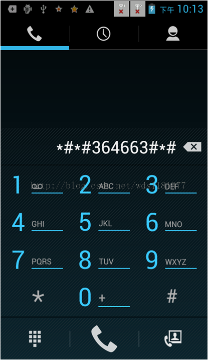

工模调节
▪进入EM模式（*#*#3646633#*#*),您将看到不同模式（听筒、耳机、外放、耳机同时外放）下的音频参数。


audio_ver1_volume_custom_default.h
(vendor/mediatek/proprietary/custom/common/cgen/cfgdefault/audio_ver1_volume_custom_default.h)
#ifndef AUDIO_VER1_VOLUME_CUSTOM_DEFAULT_H
#define AUDIO_VER1_VOLUME_CUSTOM_DEFAULT_H
#define VER1_AUD_VOLUME_RING \
32,48,64,80,96,112,128,144,160,176,192,208,224,240,255,\
32,48,64,80,96,112,128,144,160,176,192,208,224,240,255,\
128,136,144,152,160,168,176,184,192,200,212,224,236,248,255,\
128,136,144,152,160,168,176,184,192,200,212,224,236,248,255
#define VER1_AUD_VOLUME_SIP \
112,136,160,184,208,232,255,0,0,0,0,0,0,0,0,\
112,136,160,184,208,232,255,0,0,0,0,0,0,0,0,\
112,136,160,184,208,232,255,0,0,0,0,0,0,0,0,\
0,43,85,128,171,213,255,0,0,0,0,0,0,0,0
#define VER1_AUD_VOLUME_MIC \
64,112,192,144,192,192,184,184,184,184,184,0,0,0,0,\
255,192,192,180,192,192,196,184,184,184,184,0,0,0,0,\
255,208,208,180,255,208,196,0,0,0,0,0,0,0,0,\
255,208,208,164,255,208,172,0,0,0,0,0,0,0,0
#define VER1_AUD_VOLUME_FM \
32,48,64,80,96,112,128,144,160,176,192,208,224,255,255,\
88,100,112,124,136,148,160,172,184,196,208,220,232,244,255,\
68,80,92,104,116,128,140,152,168,176,188,200,212,232,248,\
32,48,64,80,96,112,128,144,160,176,192,208,224,255,255
#define VER1_AUD_VOLUME_SPH \
40,52,64,76,88,100,112,0,0,0,0,0,0,0,0,\
40,52,64,76,88,100,112,0,0,0,0,0,0,0,0,\
48,60,72,84,96,108,120,0,0,0,0,0,0,0,0,\
40,52,64,76,88,100,112,0,0,0,0,0,0,0,0
#define VER1_AUD_VOLUME_SID \
0,0,16,0,0,0,0,0,0,0,0,0,0,0,0,\
0,0,32,0,0,0,0,0,0,0,0,0,0,0,0,\
0,0,0,0,0,0,0,0,0,0,0,0,0,0,0,\
0,0,0,0,0,0,0,0,0,0,0,0,0,0,0
#define VER1_AUD_VOLUME_MEDIA \
32,48,64,80,96,112,160,144,160,176,192,208,224,240,255,\
88,100,112,124,136,148,160,172,184,196,208,220,232,244,255,\
68,80,92,104,116,128,140,152,168,176,188,200,212,232,248,\
32,48,64,80,96,112,128,144,160,176,192,208,224,240,255
#define VER1_AUD_VOLUME_MATV \
32,48,64,80,96,112,128,144,160,176,192,208,224,240,255,\
88,100,112,124,136,148,160,172,184,196,208,220,232,244,255,\
68,80,92,104,116,128,140,152,168,176,188,200,212,232,248,\
32,48,64,80,96,112,128,144,160,176,192,208,224,240,255
#define VER1_AUD_NORMAL_VOLUME_DEFAULT \
128,128,128,128,128,128
#define VER1_AUD_HEADSER_VOLUME_DEFAULT \
124,148,148,148,148,148
#define VER1_AUD_SPEAKER_VOLUME_DEFAULT \
160,120,120,120,120,120
#define VER1_AUD_HEADSETSPEAKER_VOLUME_DEFAULT \
112,160,132,132,132,132,132,132
#define VER1_AUD_EXTAMP_VOLUME_DEFAULT \
132,132,132,132,132,132
#define VER1_AUD_VOLUME_LEVEL_DEFAULT \
15,7,15,15,7,7,7,15,15
/* mic volume setting for 2G/3G HAC mode */
#define DEFAULT_VER1_AUD_VOLUME_MIC_HAC \
64,112,192,144,192,192,184,184,184,184,184,0,0,0,0
/* speech dl volume setting for 2G/3G HAC mode */
#define DEFAULT_VER1_AUD_VOLUME_SPH_HAC \
40,52,64,76,88,100,112,0,0,0,0,0,0,0,0
/* sidetone volume setting for 2G/3G HAC mode */
#define DEFAULT_VER1_AUD_VOLUME_SID_HAC \
0,0,16,0,0,0,0,0,0,0,0,0,0,0,0
#endif
//------------------------------------------------------------------------
nSpeech Volumecustomize
Ø当AudioSystem处于MODE_IN_CALL模式 .
Ø输出设备有三种Normal, Headset , Hands-free mode
Ø调节的是模拟增益
开关机音量调整
▪如果想改变开关机音量,有两种方式
如果已经定义：
./vendor/mediatek/proprietary/custom/wisky8735_3g_h/hal/audioflinger/audio/Audio_Customization_Common.h
54: #define BOOT_ANIMATION_VOLUME (0.25)
修改Audio_Customization_Common.h
如果没定义：
–第一是把AudioMtkPolicyManager.cpp
•./vendor/mediatek/proprietary/platform/common/hardware/audio/legacy/policy_driver/AudioMTKPolicyManager.cpp:74:
•#define BOOT_ANIMATION_VOLUME(0.25) 修改此值，最大为1
–第二是修改代码
•BootAnimation.cpp (alps/frameworks/base/cmds/bootanimation)
•在bool BootAnimation::threadLoop()里mediastatus = mediaplayer->start()前面 增加下面这行代码
•mediaplayer->setVolume(leftVolume,rightVolume);//适当调节音量值,参数范围0-1,默认是1
–第三种
•更换开关机资源文件
拨号键盘音量（DTMF）▪方法一，DialpadFragment.java
–Alps/packages/apps/contacts/src/com/android/contacts/dialpad/
–private static final int TONE_RELATIVE_VOLUME = 80; 最大可到100，最小是0
▪方法二，在代码中AudioMTKPolicyManager.cpp
–Alps/mediatek/platform/common/hardware/audio
–Static unsigned char audiovolume_dtmf[][]
详细文件参考